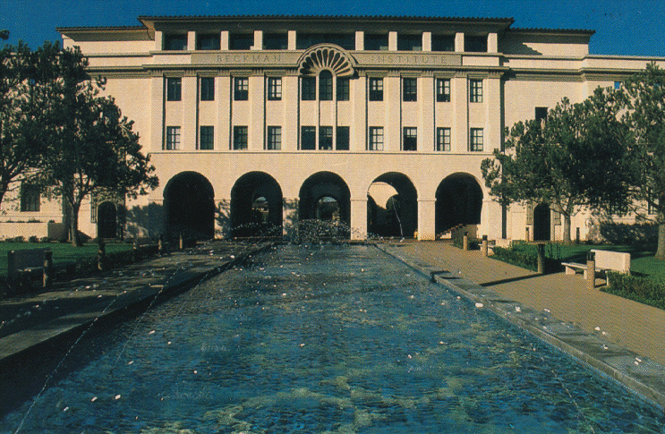
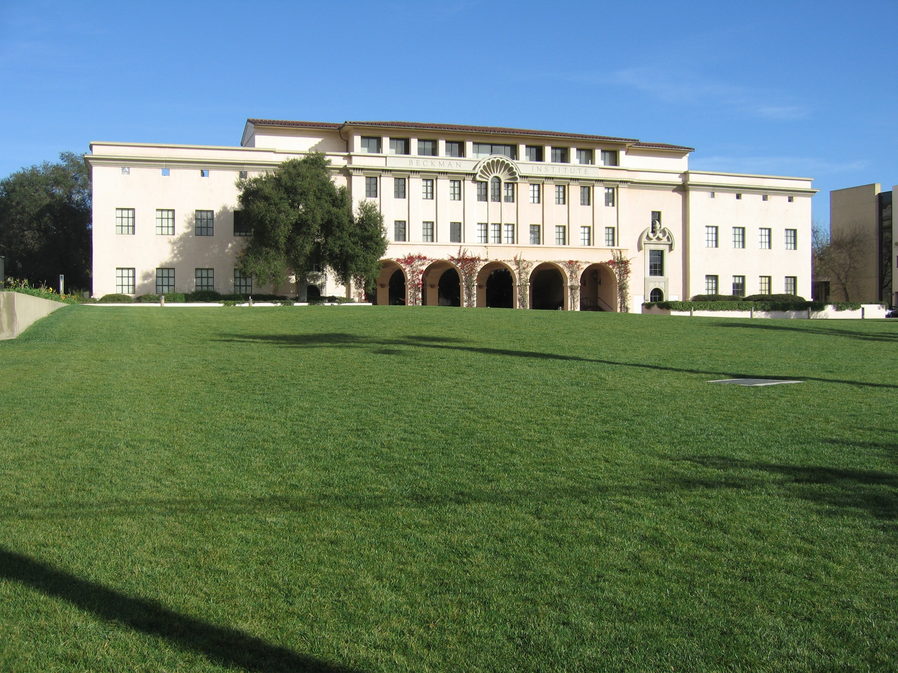

rankmaniac 2012 index spiders autogeneration

page elements. free reprint article An article written by you and made freely available to other webmasters to publish on their websites. See also article PR. Google The search rankmaniac 2012 engine with the greatest coverage of the World Wide Web and which is responsible for rankmaniac 2012 most search enginereferred traffic. Of approximately 11.5 billion pages on the World Wide Web it is estimated that Google has indexed around 8.8 billion. rankmaniac 2012 This is one reason why it takes so long to increase your ranking Google AdWords See Sponsored Links. Google PageRank How Google scores a websites importance. It gives all sites a mark out of 10. By downloading the rankmaniac 2012 Google Toolbar from httptoolbar.google.com you can view the PR of any site you visit. Google Toolbar A free tool you can download. It becomes part of your browser toolbar. Its most useful features are its PageRank display which allows you to view the PR of any site you visit and its AutoFill function when youre filling out an online form you can click AutoFill and it enters all the standard information automatically including Name Address Zip codePostcode Phone Number Email Address Business Name Credit Card Number password protected etc. Once youve downloaded and installed the rankmaniac 2012 toolbar you may need to set up how youd like  it to look and work by clicking Options rankmaniac 2012 setup is very easy. NOTE Google does record some information mostly regarding sites visited. SEO Secrets V1.3 Copyright Divine Write Copywriting Pty Ltd 48 Glossary of Terms 48 HTML rankmaniac 2012 HTML HyperText Markup Language is the coding rankmaniac 2012 language used to create much of the information on the World Wide rankmaniac 2012 Web. Web browsers read the HTML code and display rankmaniac 2012 the page that code describes. Internet An interconnected network of computers around the world. JavaScript A programming language used to create dynamic website pages e.g. interactivity. keyword A word which your customers search for and rankmaniac 2012 which you use frequently on your site in order to be relevant to those searches. This use known as targeting a keyword. Most websites actually target keyword phrases because single keywords are too generic and it is very difficult to rank highly for them. rankmaniac 2012 keyword density A measure of the frequency of your keyword in relation to the total wordcount of the page. So if your page has 200 words and your keyword phrase appears 10 times its density is 5. keyword phrase A phrase which your customers search for and which you use frequently on your site in order to be relevant to those searches. link A word or image on a web page which the reader can click to visit another page. There are  normally visual cues to indicate to the reader that the word or image is a link. link path Using text links to connect a series of page i.e. page 1 connects to page 2 page 2 connects to page 3 page 3 connects to page 4 and so on. Search engine spiders and robots use text links to jump from page to page as they gather information about it so its a good idea to allow them traverse your entire site via text links. See Link paths on p.22. for further information. link partner A webmaster who is willing to put a  link to your website on their website. Quite often link partners engage in reciprocal linking. link popularity The number of links to your website. Link popularity is the single most important factor in a high search engine ranking. Webmasters use a number of methods to increase their sites link popularity including article PR link exchange link partners reciprocal linking link buying and link directories. SEO Secrets V1.3 Copyright Divine Write Copywriting Pty Ltd 49 Glossary of Terms 49 link text The part of a text link that is visible to the reader. When generating links to your own site they are most effective in terms of ranking if rankmaniac 2012 rankmaniac 2012 they include your keyword. meta tag A short note within the header of the HTML of your web page which describes some aspect of that page. These meta tags are read by the search engines and used to help assess the relevance of a site to a particular search. natural search results The real search results. The results that most users are looking for and which take up most of the window. For most searches the search engine displays a long list of links to rankmaniac 2012 sites with content which is related to the word you searched for. These results are ranked according to how relevant and important they are. organic search results See natural search results. PPC PayPerClick advertising See Sponsored Links. PageRank See Google PageRank. rank Your position in the search results that display when someone searches for a particular word at a search engine. reciprocal link A mutual agreement between two webmasters to exchange links i.e. they both add a link to the others website on their own website. Most search engines certainly Google are sophisticated enough to rankmaniac 2012 detect reciprocal linking and they dont view it very favorably because it is clearly a manufactured method of generating links. Websites with reciprocal links risk being penalized. robot See Spider. robots.txt file A file which is used to inform the search engine spider which pages on a site should not be indexed. This file sits in your sites root directory on the web server. Alternatively rankmaniac 2012 you can do a similar thing by placing tags in the header section of your HTML for search engine robotsspiders to read. See Optimizing your web on p.23. for more information. Sandbox Many SEO experts believe that Google sandboxes new websites. Whenever it detects a new website it withholds its rightful ranking for a period while it determines whether rankmaniac 2012 your site is a genuine credible long term site. It does this to discourage the creation of SPAM websites SEO Secrets V1.3 Copyright Divine Write Copywriting Pty Ltd 50 Glossary of Terms 50 sites which serve no useful purpose other than to boost the ranking of some other site. Likewise if Google detects a sudden increase i.e. many hundreds or thousands in the number of links back to your rankmaniac 2012 site it may sandbox them for a period or in fact penalize you by lowering your ranking or blacklisting your site altogether. SEO Search Engine Optimization. The art of making your website relevant and important so that it ranks high in the search results for a particular word. SEO copywriter A copywriter who is not only proficient at web copy but also experienced in writing copy which is optimized for search engines and will therefore help you achieve a better search engine ranking for your website. search engine rankmaniac 2012 A search engine is an online tool which allows you to search for websites which contain a particular word or phrase. The most well known search engines are Google Yahoo and MSN. site map A single page which contains a list of text links to every page in the site and every page contains a text link back to the site map. Think of your site map as being at the center of a spiderweb. SPAM Generally refers to unwanted and unrequested email sent enmasse to private email addresses. Also used to refer to websites which appear high in search results without having any useful content. The creators of these sites set them up simply to cash in on their high ranking by selling advertising space links rankmaniac 2012 to other sites or by linking to other sites of their own and thereby increasing the ranking of those sites. The search engines are becoming increasingly sophisticated and already have very efficient ways to detect SPAM websites and penalize them. spider rankmaniac 2012 Google finds pages on the World Wide Web and records their details in its index by sending out spiders or robots. These spiders make their way from page to page and site to site by following text links. Sponsored Links Paid advertising which displays next to the natural search results. Customers can click on the rankmaniac 2012 ad to visit
link to your website on their website. Quite often link partners engage in reciprocal linking. link popularity The number of links to your website. Link popularity is the single most important factor in a high search engine ranking. Webmasters use a number of methods to increase their sites link popularity including article PR link exchange link partners reciprocal linking link buying and link directories. SEO Secrets V1.3 Copyright Divine Write Copywriting Pty Ltd 49 Glossary of Terms 49 link text The part of a text link that is visible to the reader. When generating links to your own site they are most effective in terms of ranking if rankmaniac 2012 rankmaniac 2012 they include your keyword. meta tag A short note within the header of the HTML of your web page which describes some aspect of that page. These meta tags are read by the search engines and used to help assess the relevance of a site to a particular search. natural search results The real search results. The results that most users are looking for and which take up most of the window. For most searches the search engine displays a long list of links to rankmaniac 2012 sites with content which is related to the word you searched for. These results are ranked according to how relevant and important they are. organic search results See natural search results. PPC PayPerClick advertising See Sponsored Links. PageRank See Google PageRank. rank Your position in the search results that display when someone searches for a particular word at a search engine. reciprocal link A mutual agreement between two webmasters to exchange links i.e. they both add a link to the others website on their own website. Most search engines certainly Google are sophisticated enough to rankmaniac 2012 detect reciprocal linking and they dont view it very favorably because it is clearly a manufactured method of generating links. Websites with reciprocal links risk being penalized. robot See Spider. robots.txt file A file which is used to inform the search engine spider which pages on a site should not be indexed. This file sits in your sites root directory on the web server. Alternatively rankmaniac 2012 you can do a similar thing by placing tags in the header section of your HTML for search engine robotsspiders to read. See Optimizing your web on p.23. for more information. Sandbox Many SEO experts believe that Google sandboxes new websites. Whenever it detects a new website it withholds its rightful ranking for a period while it determines whether rankmaniac 2012 your site is a genuine credible long term site. It does this to discourage the creation of SPAM websites SEO Secrets V1.3 Copyright Divine Write Copywriting Pty Ltd 50 Glossary of Terms 50 sites which serve no useful purpose other than to boost the ranking of some other site. Likewise if Google detects a sudden increase i.e. many hundreds or thousands in the number of links back to your rankmaniac 2012 site it may sandbox them for a period or in fact penalize you by lowering your ranking or blacklisting your site altogether. SEO Search Engine Optimization. The art of making your website relevant and important so that it ranks high in the search results for a particular word. SEO copywriter A copywriter who is not only proficient at web copy but also experienced in writing copy which is optimized for search engines and will therefore help you achieve a better search engine ranking for your website. search engine rankmaniac 2012 A search engine is an online tool which allows you to search for websites which contain a particular word or phrase. The most well known search engines are Google Yahoo and MSN. site map A single page which contains a list of text links to every page in the site and every page contains a text link back to the site map. Think of your site map as being at the center of a spiderweb. SPAM Generally refers to unwanted and unrequested email sent enmasse to private email addresses. Also used to refer to websites which appear high in search results without having any useful content. The creators of these sites set them up simply to cash in on their high ranking by selling advertising space links rankmaniac 2012 to other sites or by linking to other sites of their own and thereby increasing the ranking of those sites. The search engines are becoming increasingly sophisticated and already have very efficient ways to detect SPAM websites and penalize them. spider rankmaniac 2012 Google finds pages on the World Wide Web and records their details in its index by sending out spiders or robots. These spiders make their way from page to page and site to site by following text links. Sponsored Links Paid advertising which displays next to the natural search results. Customers can click on the rankmaniac 2012 ad to visit  the advertisers website. This is how the search engines make their money. Advertisers set their ads up to display whenever someone searches for a word which is related to their product or service. These ads look similar to the natural search results but are normally labeled Sponsored Links and normally take up rankmaniac 2012 a smaller portion of the window. These ads work on a PayPerClick rankmaniac 2012 PPC basis i.e. the advertiser only pays when someone clicks on their ad. submit You rankmaniac 2012 can submit your domain name to the search engines so that their spiders or rankmaniac 2012 robots will SEO Secrets V1.3 Copyright Divine Write Copywriting Pty Ltd 51 Glossary of Terms 51 crawl rankmaniac 2012 your site. You can also submit articles to article submission sites in order to have them published on the Internet. text link A word on a web page which the reader can click to visit another page. Text links are normally blue and underlined. Text links are what spiders or robots use to jump from page to rankmaniac 2012 page and website to website. URL Uniform Resource Locator. The address of a particular page published on the Internet. Normally in the form httpwww.yourbusinessname.comAWebPage.htm. web copy See copy. web copywriter A copywriter who understands the unique requirements of writing for an online medium. webmaster A person responsible for the management
the advertisers website. This is how the search engines make their money. Advertisers set their ads up to display whenever someone searches for a word which is related to their product or service. These ads look similar to the natural search results but are normally labeled Sponsored Links and normally take up rankmaniac 2012 a smaller portion of the window. These ads work on a PayPerClick rankmaniac 2012 PPC basis i.e. the advertiser only pays when someone clicks on their ad. submit You rankmaniac 2012 can submit your domain name to the search engines so that their spiders or rankmaniac 2012 robots will SEO Secrets V1.3 Copyright Divine Write Copywriting Pty Ltd 51 Glossary of Terms 51 crawl rankmaniac 2012 your site. You can also submit articles to article submission sites in order to have them published on the Internet. text link A word on a web page which the reader can click to visit another page. Text links are normally blue and underlined. Text links are what spiders or robots use to jump from page to rankmaniac 2012 page and website to website. URL Uniform Resource Locator. The address of a particular page published on the Internet. Normally in the form httpwww.yourbusinessname.comAWebPage.htm. web copy See copy. web copywriter A copywriter who understands the unique requirements of writing for an online medium. webmaster A person responsible for the management  of a particular website. wordcount The number of words on a particular web page. World Wide Web WWW The vast array of documents published on the Internet. It is estimated that the World Wide Web now consists of approximately 11.5 billion pages. SEO Secrets V1.3 Copyright Divine Write Copywriting Pty Ltd 52 Index 52 Index defined 46 FAQs on writing 3 submitting 30 C 301 redirects generate rankmaniac 2012 links by code See HTML publishing 29 rebuilding an existing site how long until rank competitors 25 increases 32 links 28 conclusion 39 illegal changes 31 construct
of a particular website. wordcount The number of words on a particular web page. World Wide Web WWW The vast array of documents published on the Internet. It is estimated that the World Wide Web now consists of approximately 11.5 billion pages. SEO Secrets V1.3 Copyright Divine Write Copywriting Pty Ltd 52 Index 52 Index defined 46 FAQs on writing 3 submitting 30 C 301 redirects generate rankmaniac 2012 links by code See HTML publishing 29 rebuilding an existing site how long until rank competitors 25 increases 32 links 28 conclusion 39 illegal changes 31 construct